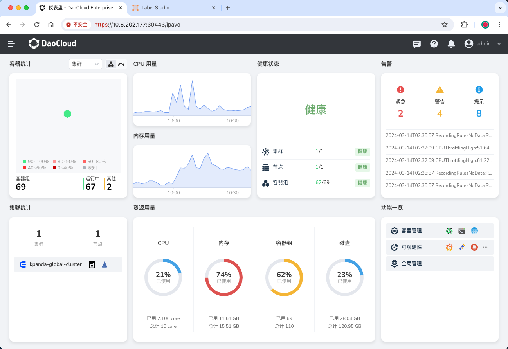
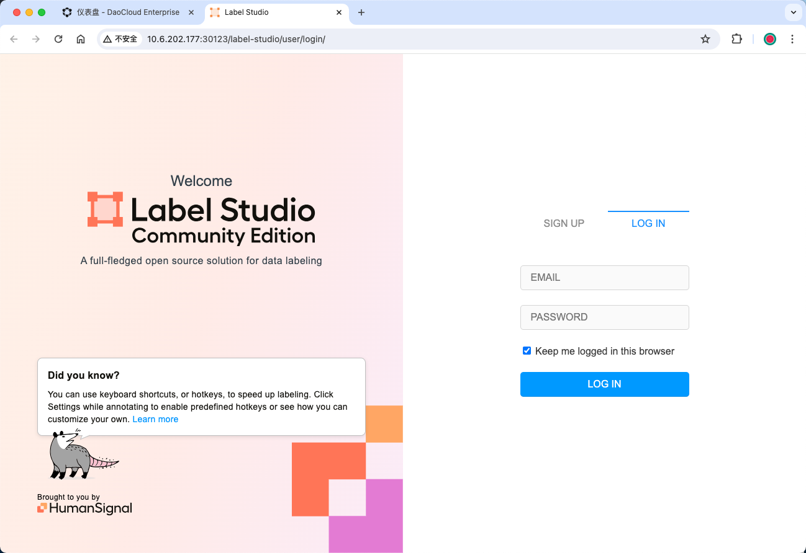
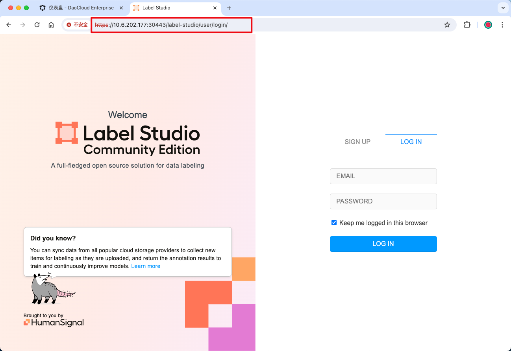
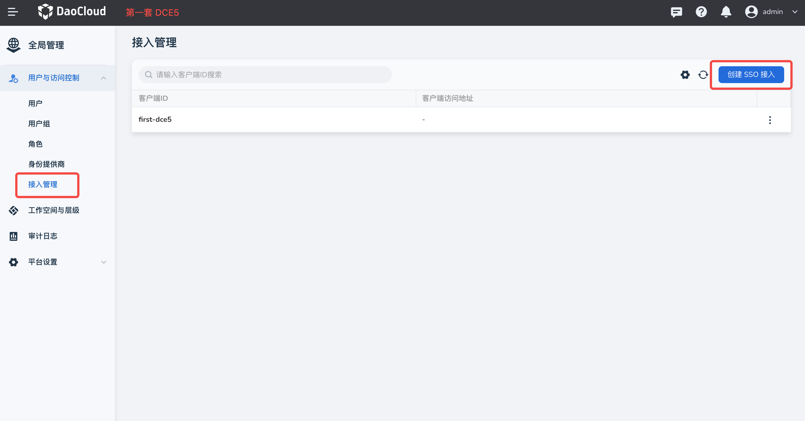
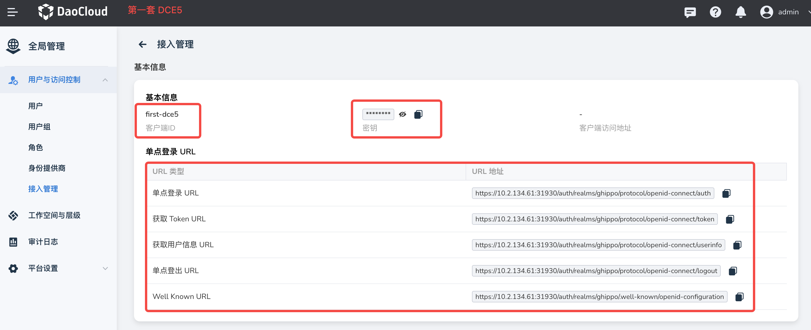
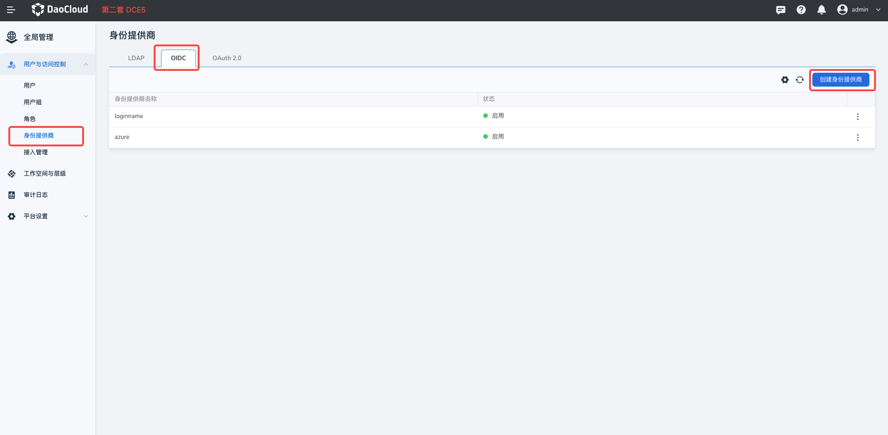
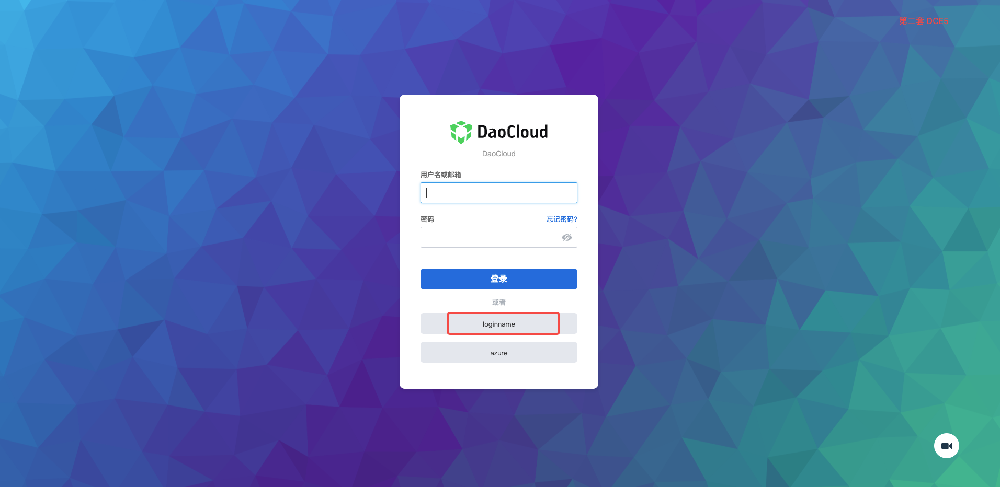

如何将客户系统集成到 AI 算力中心（OEM IN）¶
OEM IN 是指合作伙伴的平台作为子模块嵌入 AI 算力中心，出现在 AI 算力中心一级导航栏。 用户通过 AI 算力中心进行登录和统一管理。实现 OEM IN 共分为 5 步，分别是：
Note
以下使用开源软件 Label Studio 来做嵌套演示。实际场景需要自己解决客户系统的问题：
例如客户系统需要自己添加一个 Subpath，用于区分哪些是 AI 算力中心的服务，哪些是客户系统的服务。
环境准备¶
-
部署 AI 算力中心环境：
https://10.6.202.177:30443作为 AI 算力中心的环境。
-
部署客户系统环境：
http://10.6.202.177:30123作为客户系统应用过程中对客户系统的操作请根据实际情况进行调整。
-
规划客户系统的 Subpath 路径：
http://10.6.202.177:30123/label-studio（建议使用辨识度高的名称作为 Subpath，不能与主 AI 算力中心的 HTTP router 发生冲突）。 请确保用户通过http://10.6.202.177:30123/label-studio能够正常访问客户系统。
统一域名和端口¶
-
SSH 登录到 AI 算力中心服务器。
-
使用
vim命令创建和修改 label-studio.yaml 文件label-studio.yamlapiVersion: networking.istio.io/v1beta1 kind: ServiceEntry metadata: name: label-studio namespace: ghippo-system spec: exportTo: - "*" hosts: - label-studio.svc.external ports: # 添加虚拟端口 - number: 80 name: http protocol: HTTP location: MESH_EXTERNAL resolution: STATIC endpoints: # 改为客户系统的域名（或IP） - address: 10.6.202.177 ports: # 改为客户系统的端口号 http: 30123 --- apiVersion: networking.istio.io/v1alpha3 kind: VirtualService metadata: # 修改为客户系统的名字 name: label-studio namespace: ghippo-system spec: exportTo: - "*" hosts: - "*" gateways: - ghippo-gateway http: - match: - uri: exact: /label-studio # 修改为客户系统在 AI 算力中心.0 Web UI 入口中的路由地址 - uri: prefix: /label-studio/ # 修改为客户系统在 AI 算力中心.0 Web UI 入口中的路由地址 route: - destination: # 修改为上文 ServiceEntry 中的 spec.hosts 的值 host: label-studio.svc.external port: # 修改为上文 ServiceEntry 中的 spec.ports 的值 number: 80 --- apiVersion: security.istio.io/v1beta1 kind: AuthorizationPolicy metadata: # 修改为客户系统的名字 name: label-studio namespace: istio-system spec: action: ALLOW selector: matchLabels: app: istio-ingressgateway rules: - from: - source: requestPrincipals: - '*' - to: - operation: paths: - /label-studio # 修改为 VirtualService 中的 spec.http.match.uri.prefix 的值 - /label-studio/* # 修改为 VirtualService 中的 spec.http.match.uri.prefix 的值（注意，末尾需要添加 "*"） -
使用
kubectl命令应用 label-studio.yaml ： -
验证 Label Studio UI 的 IP 和 端口是否一致：

打通用户体系¶
将客户系统与 AI 算力中心平台通过 OIDC/OAUTH 等协议对接，使用户登录 AI 算力中心平台后进入客户系统时无需再次登录。
Note
这里使用两套 AI 算力中心相互对接来进行演示。涵盖将 AI 算力中心 作为用户源登录客户平台，和将客户平台作为用户源登录 AI 算力中心 平台两种场景。
-
AI 算力中心作为用户源，登录客户平台： 首先将第一套 AI 算力中心作为用户源，实现对接后第一套 AI 算力中心中的用户可以通过 OIDC 直接登录第二套 AI 算力中心， 而无需在第二套中再次创建用户。在第一套 AI 算力中心中通过 全局管理 -> 用户与访问控制 -> 接入管理 创建 SSO 接入。


-
客户平台作为用户源，登录 AI 算力中心： 将第一套 AI 算力中心 中生成的客户端 ID、客户端密钥、单点登录 URL 等填写到第二套 AI 算力中心 全局管理 -> 用户与访问控制 -> 身份提供商 -> OIDC 中，完成用户对接。 对接后，第一套 AI 算力中心中的用户可以通过 OIDC 直接登录第二套 AI 算力中心，而无需在第二套中再次创建用户。


-
对接完成后，第二套 AI 算力中心 登录页面将出现 OIDC 选项，首次登录时选择通过 OIDC 登录（自定义名称，这里是名称是 loginname）， 后续将直接进入无需再次选择。

Note
使用两套 AI 算力中心,表明客户只要支持 OIDC 协议，无论是 AI 算力中心作为用户源，还是“客户平台”作为用户源，两种场景都支持。
对接导航栏¶
参考文档下方的 tar 包来实现一个空壳的前端子应用，把客户系统以 iframe 的形式放进该空壳应用里。
-
下载 gproduct-demo-main.tar.gz 文件，打开 src/App-iframe.vue 文件，修改其中的 src 属性值（即进入客户系统的地址）：
- 绝对地址：
src="https://10.6.202.177:30443/label-studio" (AI 算力中心地址 + Subpath) - 相对地址：
src="./external-anyproduct/insight"
- 绝对地址：
-
删除 src 文件夹下的 App.vue 和 main.ts 文件，同时将：
- App-iframe.vue 重命名为 App.vue
- main-iframe.ts 重命名为 main.ts
-
按照 readme 步骤构建镜像（注意：执行最后一步前需要将 demo.yaml 中的镜像地址替换成构建出的镜像地址）
demo.yamlkind: Namespace apiVersion: v1 metadata: name: gproduct-demo --- apiVersion: apps/v1 kind: Deployment metadata: name: gproduct-demo namespace: gproduct-demo labels: app: gproduct-demo spec: selector: matchLabels: app: gproduct-demo template: metadata: name: gproduct-demo labels: app: gproduct-demo spec: containers: - name: gproduct-demo image: release.daocloud.io/gproduct-demo # 修改这个镜像地址 ports: - containerPort: 80 --- apiVersion: v1 kind: Service ...
对接完成后，将在 AI 算力中心的一级导航栏出现 客户系统 ，点击可进入客户系统。

定制外观¶
Note
AI 算力中心支持通过写 CSS 的方式来实现外观定制。实际应用中客户系统如何实现外观定制需要根据实际情况处理。
登录客户系统，通过 全局管理 -> 平台设置 -> 外观定制 可以自定义平台背景颜色、logo、名称等， 具体操作请参照外观定制。
打通权限体系（可选）¶
方案思路一：
定制化团队可实现一定制模块，AI 算力中心将每一次的用户登录事件通过 Webhook 的方式通知到定制模块， 定制模块可自行调用 AnyProduct 和 AI 算力中心的 OpenAPI 将该用户的权限信息同步。
方案思路二：
通过 Webhook 方式，将每一次的授权变化都通知到 AnyProduct（如有需求，后续可实现）。
AnyProduct 使用 AI 算力中心的其他能力(可选)¶
操作方法为调用 AI 算力中心OpenAPI。